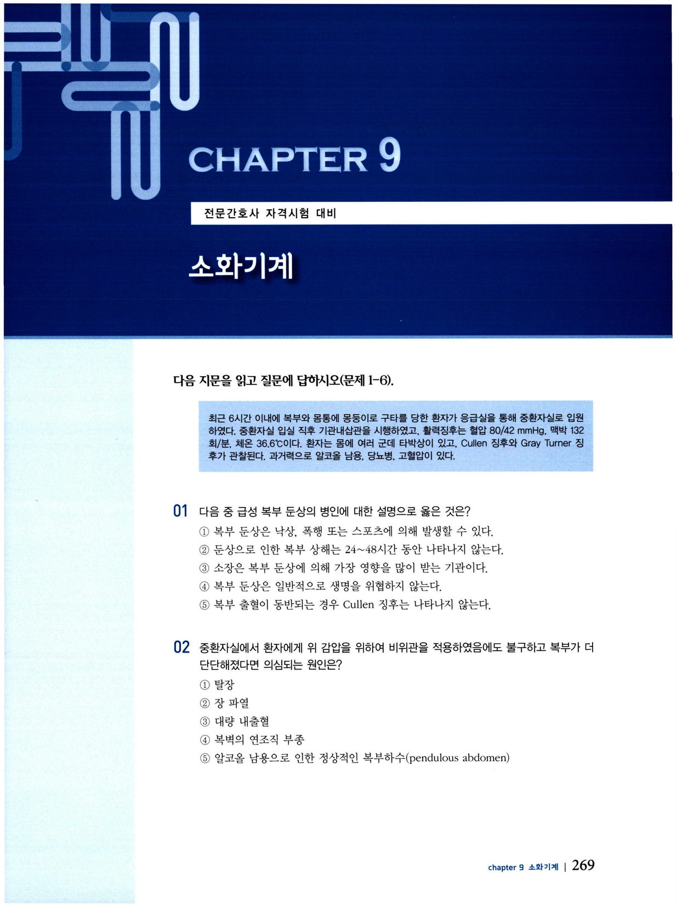
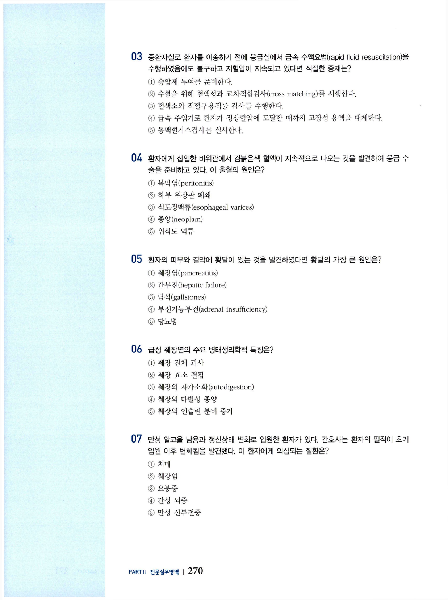
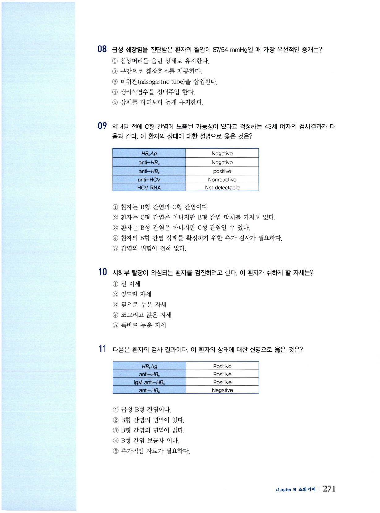
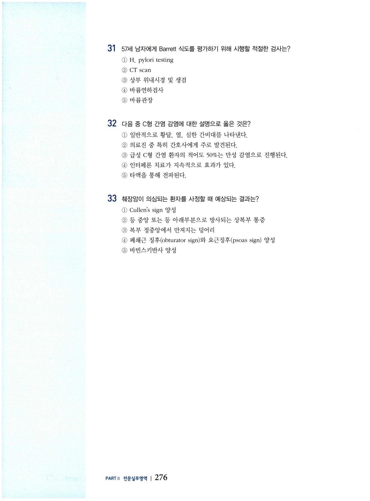

소화기계 문제
전문간호사 자격시험 대비 문제집 — 소화기계 (CHAPTER 9).
문 01–06 급성 복부 둔상 · 급성 췌장염 공유 지문
다음 지문을 읽고 질문에 답하시오(문제 1–6). 최근 6시간 이내에 복부와 몸통에 둔둥이로 구타를 당한 환자가 응급실을 통해 중환자실로 입원하였다. 중환자실 입실 직후 기관내삽관을 시행하였고, 활력징후는 혈압 80/42 mmHg, 맥박 132회/분, 체온 36.6℃이다. 환자는 몸에 여러 군데 타박상이 있고 Cullen 징후와 Gray Turner 징후가 관찰된다. 과거력으로 알코올 남용, 당뇨병, 고혈압이 있다.
다음 중 급성 복부 둔상의 병인에 대한 설명으로 옳은 것은?
- 복부 둔상은 낙상, 폭행 또는 스포츠에 의해 발생할 수 있다.
- 둔상으로 인한 복부 상해는 24~48시간 동안 나타나지 않는다.
- 소장은 복부 둔상에 의해 가장 영향을 많이 받는 기관이다.
- 복부 둔상은 일반적으로 생명을 위협하지 않는다.
- 복부 출혈이 동반되는 경우 Cullen 징후는 나타나지 않는다.
중환자실에서 환자에게 위 감압을 위하여 비위관을 적용하였음에도 불구하고 복부가 더 단단해졌다면 의심되는 원인은?
- 탈장
- 장 파열
- 대량 내출혈
- 복벽의 연조직 부종
- 알코올 남용으로 인한 정상적인 복부하수(pendulous abdomen)
중환자실로 환자를 이송하기 전에 응급실에서 급속 수액요법(rapid fluid resuscitation)을 수행하였음에도 불구하고 저혈압이 지속되고 있다면 적절한 중재는?
- 승압제 투여를 준비한다.
- 수혈을 위해 혈액형과 교차적합검사(cross matching)를 시행한다.
- 혈색소와 적혈구용적률 검사를 수행한다.
- 급속 주입기로 환자가 정상혈압에 도달할 때까지 고장성 용액을 대체한다.
- 동맥혈가스검사를 실시한다.
환자에게 삽입한 비위관에서 검붉은색 혈액이 지속적으로 나오는 것을 발견하여 응급 수술을 준비하고 있다. 이 출혈의 원인은?
- 복막염(peritonitis)
- 하부 위장관 폐쇄
- 식도정맥류(esophageal varices)
- 종양(neoplasm)
- 위식도 역류
환자의 피부와 결막에 황달이 있는 것을 발견하였다면 황달의 가장 큰 원인은?
- 췌장염(pancreatitis)
- 간부전(hepatic failure)
- 담석(gallstones)
- 부신기능부전(adrenal insufficiency)
- 당뇨병
급성 췌장염의 주요 병태생리학적 특징은?
- 췌장 전체 괴사
- 췌장 효소 결핍
- 췌장의 자가소화(autodigestion)
- 췌장의 다발성 종양
- 췌장의 인슐린 분비 증가


문 07 간성 뇌증
만성 알코올 남용과 정신상태 변화로 입원한 환자가 있다. 간호사는 환자의 필적이 초기 입원 이후 변화함을 발견하였다. 이 환자에게 의심되는 질환은?
- 치매
- 췌장염
- 요붕증
- 간성 뇌증
- 만성 신부전증
문 08 급성 췌장염 · 저혈압 중재
급성 췌장염을 진단받은 환자의 혈압이 87/54 mmHg일 때 가장 우선적인 중재는?
- 침상머리를 올린 상태로 유지한다.
- 구강으로 췌장효소를 제공한다.
- 비위관(nasogastric tube)을 삽입한다.
- 생리식염수를 정맥주입한다.
- 상체를 다리보다 높게 유지한다.
문 09 간염 혈청검사 판독
약 4달 전에 C형 간염에 노출될 가능성이 있다고 걱정하는 43세 여자의 검사결과가 다음과 같다. 이 환자의 상태에 대한 설명으로 옳은 것은?
| HBsAg | anti-HBc | anti-HBs | anti-HCV | HCV RNA |
|---|---|---|---|---|
| Negative | Negative | Positive | Nonreactive | Not detectable |
- 환자는 B형 간염과 C형 간염이다.
- 환자는 C형 간염은 아니지만 B형 간염 항체를 가지고 있다.
- 환자는 B형 간염은 아니지만 C형 간염일 수 있다.
- 환자의 B형 간염 상태를 확정하기 위한 추가 검사가 필요하다.
- 간염의 위험이 전혀 없다.

문 10 서혜부 탈장 검진 자세
서혜부 탈장이 의심되는 환자를 검진하려고 한다. 이 환자가 취하게 할 자세는?
- 선 자세
- 엎드린 자세
- 옆으로 누운 자세
- 쪼그리고 앉은 자세
- 똑바로 누운 자세
문 11 B형 간염 혈청검사 판독
다음은 환자의 검사 결과이다. 이 환자의 상태에 대한 설명으로 옳은 것은?
| HBsAg | anti-HBc IgM | anti-HBc | anti-HBs |
|---|---|---|---|
| Positive | Positive | Positive | Negative |
- 급성 B형 간염이다.
- B형 간염의 면역이 있다.
- B형 간염의 면역이 없다.
- B형 간염 보균자이다.
- 추가적인 자료가 필요하다.
문 12 급성 담낭염
급성 담낭염 환자에 대한 설명으로 옳은 것은?
- 검사대에서 좌우로 구른다.
- 아파보이고 열이 난다.
- 고령 환자는 Murphy's sign이 나타날 가능성이 더 높다.
- 대부분 담석이 담관을 막을 때까지 무증상이다.
- 소변량이 감소한다.
문 13 만성 변비 약물 원인
85세 여자가 만성 변비가 있으며 건강사정 결과가 다음과 같다. 이 환자의 변비를 초래한 대표적 원인은?
과거력: 고혈압, 골다공증, 골관절염, 과민성 방광
현재 복용 약물: amlodipine 5 mg, Oxybutynin 2.5 mg, naproxen 375 mg, Prevacid 30 mg, calcium and vitamin D 보충제
- 부적절한 수분 섭취
- 고령으로 활동저하
- 복용약물
- 부적절한 섬유소 섭취
- 방광 팽만
문 14 장폐색 급성기 간호
장폐색 환자의 급성기 간호에서 가장 주의해야 할 사항은?
- 흡인(aspiration)
- 고칼륨혈증(hyperkalemia)
- 저혈량증(hypovolemia)
- 대사성 알칼리증(metabolic alkalosis)
- 고체온증
문 15 복막염(반동 압통) 우선 중재
50세 남자가 복통을 호소하여 내원하였다. 내원 당시 미열과 함께 둔탁하고 약한 장음이 들렸다. 입원 후 통증이 더 심해지고 움직임이 약화되었으며, 장음이 들리지 않고 복부 강직이 있으며, 복부를 누를 때보다 손을 뗄 때 통증이 더 심하다. 이 환자에게 우선적인 중재는?
- 마약성 진통제(opiate) 용량 증량
- 수술 준비
- 비위관 삽관
- 항생제 치료
- 복막천자
문 16 치질 직장출혈 양상
치질과 관련된 직장출혈에 대한 일반적인 설명으로 옳은 것은?
- 닦을 때 혈액이 묻어남
- 소량의 적갈색 출혈
- 많은 양의 활동성 선홍빛 출혈
- 변에 많은 혈전과 점액이 섞임
- 짙은 갈색에서 검은 색으로 정상적인 변과 섞여 있음
문 17 직장출혈 · 소적혈구성 저색소성 빈혈
62세 남자가 최근 며칠 동안에 검붉은 피가 조금씩 보여 내원하였다. 신체검진에서 직장 종양이 아닌 외치질이 있고 검진 손가락에 짙은 갈색의 변이 약간 보였다. 잠혈 검사는 양성이고 혈액검사 상 소적혈구성 저색소성 빈혈(microcytic hypochromic anemia)이 있었다. 이 환자에게 가장 적절한 중재는?
- 항문경 검사를 시행한다.
- 환자에게 장운동 후 좌욕을 하도록 권한다.
- 대장내시경을 통해 소화기질환을 치료한다.
- 이중조영바륨관장을 지시한다.
- 육류를 제한한다.
문 18 충수염 사정
72세 여자가 지난 24시간 동안 복부 경련과 구토를 보여 내원하였다. 충수염이 의심되는 환자를 사정하면서 고려해야 할 것은?
- 충수의 해부학적 위치에 따라 증상이 다를 수 있다.
- 고령 환자가 급성 복통을 호소하는 가장 흔한 질환이다.
- 복통이 시작되기 전의 구토는 자주 관찰된다.
- 증상이 골반 염증성 질환의 증상과 크게 다르다.
- Turner 징후를 확인한다.
문 19 반동 압통 · Blumberg's sign
복부 옆진에서 반동 압통이 있을 때 다음 중 양성으로 나타나는 징후는?
- Markle's sign
- Murphy's sign
- Blumberg's sign
- Nikolsky's sign
- Romberg's sign
문 20 우상복부 통증 · 급성 담낭염
47세 여자가 12시간 전부터 시작된 어깨로 방사되는 우상복부 복통과 열, 오한을 호소하며 내원하였다. 환자는 과거에도 유사한 증상이 약하게 있었다고 하며, 복부 검진 시 우상복부 압통이 있다. 이 환자에게 의심되는 상태는?
- 간세포암
- 급성 담낭염
- 급성 간염
- 담석증
- 췌장염
문 21 급성 담낭염 검사결과
급성 담낭염에서 일반적으로 볼 수 있는 검사결과는?
- 혈청 크레아티닌 증가
- 알칼리인산분해효소(alkaline phosphatase) 증가
- 백혈구 감소
- AST 감소
- 아밀라아제 감소
문 22 담낭염 중증 합병증
담낭염 환자에게 나타나는 가장 흔한 중증 합병증은?
- 담낭의 선종(adenocarcinoma)
- 담낭농증(gallbladder empyema)
- 간부전
- 췌장염
- 담즙 과다생성
문 23 급성 담낭염 흔한 증상
급성 담낭염 환자에게 가장 많이 관찰되는 증상은?
- 발열
- 구토
- 황달
- 촉진되는 담낭
- 좌상복부 통증
문 24 결장암 위험요인
다음 중 결장암 발병 위험을 높이는 요인은?
- 50세 이하
- 폴립증(polyposis) 가족력
- BRCA 유전자
- 장기간 아스피린 치료
- CA 19-9 상승
문 25 급성 대장게실염 진단검사
68세 남자가 급성 대장게실염이 의심된다. 이 환자의 진단을 뒷받침할 수 있는 적절한 검사는?
- X-ray
- 초음파검사
- 조영제 사용 CT scan
- 바륨 관장
- 대장내시경
문 26 H2RA · 약물 상호작용(cimetidine)
다음 소화성궤양치료제(H2RA) 중 phenytoin 및 theophylline과 상호작용을 유발할 가능성이 가장 큰 약물은?
- cimetidine
- famotidine
- nizatidine
- ranitidine
- omeprazole
문 27 COX-1 작용기전
Cyclooxygenase-1(COX-1)의 작용기전에 포함되는 것은?
- 염증 반응
- 통증 전달
- 위 보호 점막층 유지
- 신장 소동맥 수축
- 위장관 운동 저하
문 28 PPI 약물(lansoprazole)
다음 중 역류성식도염 환자에게 처방되는 프로톤펌프억제제(PPI)에 속하는 약물은?
- loperamide
- metoclopramide
- nizatidine
- lansoprazole
- ranitidine
문 29 PPI 장기 사용 위험
다음 중 위궤양치료제인 프로톤펌프억제제(PPI)를 장기간 사용했을 때 예상되는 위험은?
- 변비
- 대장출혈
- 오심, 구토
- 철분의 흡수 증가
- 골절
문 30 항고혈압제 · 속쓰림
58세 남자가 최근 항고혈압제를 복용하기 시작했는데 심한 속쓰림 증상을 호소한다. 다음 중 복용한 것으로 추정되는 약물은?
- atenolol
- trandolapril
- amlodipine
- losartan
- verapamil
문 31 Barrett 식도 평가검사
57세 남자에게 Barrett 식도를 평가하기 위해 시행할 적절한 검사는?
- H. pylori testing
- CT scan
- 상부 위내시경 및 생검
- 바륨연하검사
- 바륨관장
문 32 C형 간염 감염
다음 중 C형 간염 감염에 대한 설명으로 옳은 것은?
- 일반적으로 황달, 열, 심한 간비대를 나타낸다.
- 의료진 중 특히 간호사에게 주로 발견된다.
- 급성 C형 간염 환자의 적어도 50%는 만성 감염으로 진행된다.
- 인터페론 치료가 지속적으로 효과가 있다.
- 타액을 통해 전파된다.
문 33 췌장암 사정
췌장암이 의심되는 환자를 사정할 때 예상되는 결과는?
- Cullen's sign 양성
- 등 중앙 또는 등 아래부분으로 방사되는 상복부 통증
- 복부 정중앙에서 만져지는 덩어리
- 폐쇄근 징후(obturator sign)와 요근징후(psoas sign) 양성
- 바빈스키반사 양성
